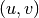
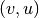

This documentation is for the development version 1.9.dev_20130728171020
Returns local edge connectivity for nodes s and t in G.
Local edge connectivity for two nodes s and t is the minimum number of edges that must be removed to disconnect them.
This is a flow based implementation of edge connectivity. We compute the maximum flow on an auxiliary digraph build from the original network (see below for details). This is equal to the local edge connectivity because the value of a maximum s-t-flow is equal to the capacity of a minimum s-t-cut (Ford and Fulkerson theorem) [R199] .
| Parameters : | G : NetworkX graph
s : node
t : node
aux_digraph : NetworkX DiGraph (default=None)
|
|---|---|
| Returns : | K : integer
|
See also
local_node_connectivity, node_connectivity, edge_connectivity, max_flow, ford_fulkerson
Notes
This is a flow based implementation of edge connectivity. We compute the maximum flow using the Ford and Fulkerson algorithm on an auxiliary digraph build from the original graph:
If the input graph is undirected, we replace each edge (u,v) with two reciprocal arcs  and  and then we set the attribute ‘capacity’ for each arc to 1. If the input graph is directed we simply add the ‘capacity’ attribute. This is an implementation of algorithm 1 in [R199].
The maximum flow in the auxiliary network is equal to the local edge connectivity because the value of a maximum s-t-flow is equal to the capacity of a minimum s-t-cut (Ford and Fulkerson theorem).
References
| [R199] | (1, 2, 3) Abdol-Hossein Esfahanian. Connectivity Algorithms. http://www.cse.msu.edu/~cse835/Papers/Graph_connectivity_revised.pdf |
Examples
>>> # Platonic icosahedral graph has edge connectivity 5
>>> # for each non adjacent node pair
>>> G = nx.icosahedral_graph()
>>> nx.local_edge_connectivity(G,0,6)
5